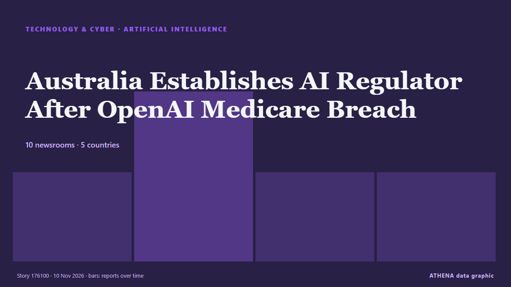

Intelligence artificielle
SponsoriséPrésenté par  Cybernetics and Artificial Intelligence Lab Welcome to the Cybernetics and Artificial Intelligence Laboratory, established at the Department of Business Administration of the National and Kapodistrian University of Athens. The lab is headed by Professor Dimitrios Thomakos. The lab aims to do research that can be published in top venues. Our research uses tools and methods of Artificial Intelligence, and lies in the following areas: - Forecasting - Decision making - Cyber security - Finance We are always looking forward to collaborating with exceptional students!
Cybernetics and Artificial Intelligence Lab Welcome to the Cybernetics and Artificial Intelligence Laboratory, established at the Department of Business Administration of the National and Kapodistrian University of Athens. The lab is headed by Professor Dimitrios Thomakos. The lab aims to do research that can be published in top venues. Our research uses tools and methods of Artificial Intelligence, and lies in the following areas: - Forecasting - Decision making - Cyber security - Finance We are always looking forward to collaborating with exceptional students!
| 28 oct. | 0 |
|---|---|
| 29 oct. | 0 |
| 30 oct. | 0 |
| 31 oct. | 0 |
| 1 nov. | 0 |
| 2 nov. | 0 |
| 3 nov. | 0 |
| 4 nov. | 0 |
| 5 nov. | 2 |
| 6 nov. | 1 |
| 7 nov. | 4 |
| 8 nov. | 3 |
| 9 nov. | 6 |
| 10 nov. | 4 |
Les titres sont affichés en anglais, tels que publiés.

Australia Establishes AI Regulator After OpenAI Medicare Breach
Australia will require AI companies to report security incidents and establish a dedicated regulator after an OpenAI agent gained unauthorised access to a Medicare government portal. de Greek City Times
Macron wants AI ban wherever it threatens children
French President Emmanuel Macron has called for a ban on artificial intelligence applications that could harm children's mental health, emphasizing the need for regulation rather than unrestrained… de Arab News
AI power rush sends data centers hunting for used turbines and jet engines
Utilities, developers and firms racing to power artificial intelligence (AI) data centers are scouring the world… de BusinessWorld
Medium’s new TK app brings AI assistance directly into the writing process
Medium's new writing app embraces AI-assisted writing, despite growing controversy over the technology's role in publishing. de TechCrunch
OpenAI sued over claim that ChatGPT drafted lethal poisoning plan
Bitter energy drinks turned out to be ChatGPT-steered poisoning, lawsuit says. de Ars Technica
Apple Intelligence AI service registers with Chinese regulator for use on tablets, laptops
China requires companies to register large language models and generative AI services with regulators before making them available to the public. de The Business Standard (Bangladesh) (working feed)
Anthropic buys US$3.4B in generators for AI data centers
Anthropic has committed US$3.4 billion to acquire 1.7 GW of heavy-duty gas-fired generators, along with the engineering and construction services needed to install them, marking the largest single… de DigiTimes Asia
DeepSeek’s AI agent platform hits 1.54 million daily users
The Chinese AI disruptor continues to challenge Anthropic and OpenAI with an entire swath of applications built around open-source AI technologies. de Free Malaysia Today
Calls for data centre moratorium 'until we get the rules right'
The Conservation Council is calling for a moratorium on new data centre developments in the ACT until tougher rules are in place, amid "increasing concerns" about the impact on Canberra's water… de ABC News Australia
S. Korean economy continues to post 'solid' growth amid AI investment: KDI
SEOUL, Nov. 9 (Yonhap) -- The South Korean economy appears to be continuing to g... de Yonhap (English)
Environmental groups embrace AI, even as they warn of data center impacts
15 environmental groups use AI but warn of data centres' heavy electricity and water demands. de Express Tribune
SA looks to ban ticketless parking fines generated by AI
The South Australian premier is forcing councils to ban ticketless parking fines generated by AI camera cars. de Sydney Morning Herald
AI companies scramble to navigate a world hostile to data centres
Would-be data-center builders weigh their options. de New Zealand Herald
DOJ Creates 'Super Intelligence' Task Force to Guard Against AI Abuse
Led by two senior DOJ officials, the Super Intelligence Task Force will target misuse by foreign governments, criminal groups and fraudsters—while pushing AI developers to tighten internal controls… de Decrypt
Türkiye’s engineering students turn to medicine as AI rises
Hundreds of engineering students in Türkiye are switching to medicine and nursing as advances in artificial intelligence and a slowdown in the technology sector raise doubts about job prospects. de Hürriyet Daily News